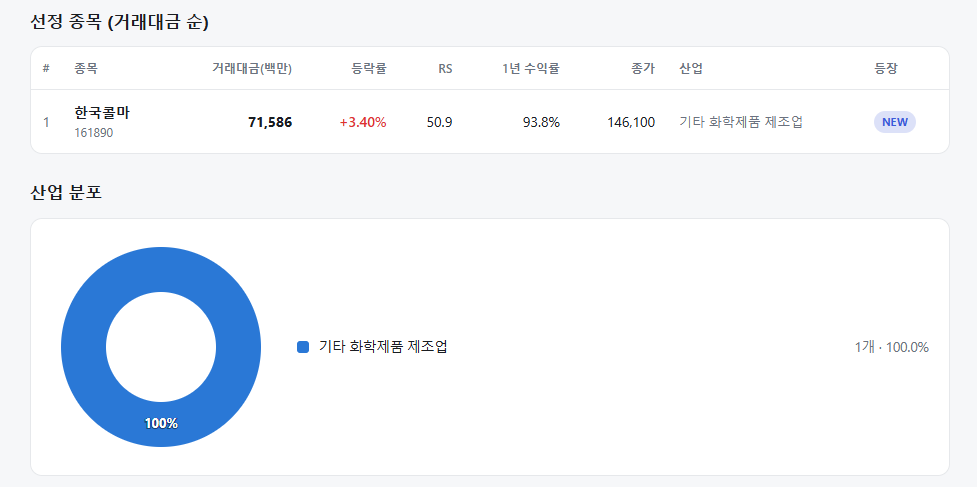
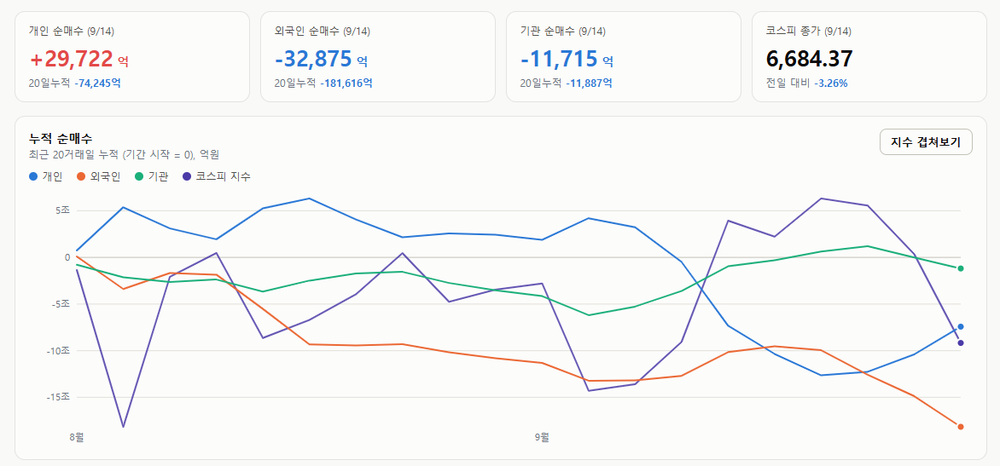

매일의 주도주 정리를 위해 기록합니다.
연속적으로 나온 종목들 또는 상승 후 조정받는 종목 위주로 리서치 해보시면 좋을 것 같습니다.

*오늘의 퀀트픽 선종 종목은 없습니다.
#상승섹터
전문소매 및 인터넷·카탈로그
주요 종목: 실리콘투, 포니링크, 글로벌텍스프리, 한독크린텍.
분석: 전문소매 업종이 +4.10%, 인터넷과카탈로그소매 업종이 +2.93%, 기타금융이 +2.12% 상승했습니다. 대형 기술주 투매 현상 속에서 실리콘투를 위시한 K-뷰티 유통주 및 면세·소비재 관련 방어적 밸류체인으로 수급 피신이 이루어졌습니다.
우주항공·국방 및 개별 모멘텀
주요 종목: 한화시스템, 삼성중공업(+2.57%), 대한광통신(+1.98%), 광전자(+30.00% 상한가).
분석: 우주항공과국방 업종이 +2.87% 상승하며 방산 사이클의 견고함을 증명했습니다. 삼성중공업 등 수주 기반의 조선주가 상승 방어에 성공했으며, 전자장비 섹터의 약세 속에서도 광전자가 단독 상한가를 기록하는 등 투기적 개별 모멘텀 장세가 포착되었습니다.
#조정섹터
반도체 메가 캡 및 전력 인프라
주요 업종 및 종목: SK하이닉스(-6.29%), SK스퀘어(-7.81%), 삼성전자(-4.05%), 삼성전자우(-4.81%), 두산에너빌리티(-4.30%).
분석: SK하이닉스(-6.29%)와 삼성전자(-4.05%) 등 메가 캡에서 대규모 프로그램 매물 폭탄이 쏟아졌으며, 두산에너빌리티(-4.30%)를 필두로 한 전기유틸리티 및 기계 등 인프라 섹터 전반으로 매도세가 확산되었습니다.
#수급동향

코스피 지수는 -3.26% 급락한 6,684.37로 마감하며 6,700선을 내어주었습니다. 대형주 중심의 코스피 200 지수 역시 -3.61% 하락한 1,050.83을 기록했습니다. 코스닥 지수는 -1.69% 하락한 806.79로 장을 마쳤습니다.
유가증권시장에서 개인 투자자가 2조 9,722억 원을 순매수하며 방어에 나섰지만, 외국인 투자자가 3조 2,875억 원, 기관 투자자가 1조 1,715억 원을 동반 순매도하며 지수 하락을 주도했습니다.
예상대로 나온 물가가 왜 금리 인상확률을 높였을까
미국 8월 소비자물가(CPI)는 전월 대비 0.4%, 전년 대비 3.4%로 예상에 딱 맞았습니다. 그런데 이번 주 FOMC의 금리 인상 확률은 87%까지 뛰었습니다. 예상대로 나온 물가가 왜 금리 인상 확률을 높였을까요.
① 문제는 헤드라인이 아니라 근원물가
물가에는 두 종류가 있습니다. 모든 품목을 넣은 헤드라인과, 널뛰는 에너지·식품을 뺀 근원입니다. 8월 헤드라인은 예상대로였지만, 근원물가가 전월 대비 0.3%로 예상(0.2%)을 웃돌았습니다. 전년 대비로는 2.4%로 오히려 둔화됐는데도 시장이 인상 쪽으로 기운 이유는 두 가지입니다.
첫째, 유가입니다. 이달 국제유가는 배럴당 25달러, 지난주에만 10달러 올랐습니다. 한투증권은 9월 헤드라인이 3.5~3.6%로 반등하고 연말까지 기저효과까지 더해져 위로 기울 것으로 봤습니다.
둘째, 연준이 보는 물가는 따로 있습니다. 연준이 중시하는 근원 PCE는 3.3%로 근원 CPI(2.4%)보다 0.9%p나 높습니다. CPI 비중이 큰 주거비·의료비는 둔화된 반면, PCE 비중이 큰 자산운용 보수와 소프트웨어 가격이 급등한 영향입니다. "AI 비용 상승과 금융시장 활황이 연준의 물가 목표를 밀어 올리고 있다"는 뜻이죠.
그 결과 9월 인상을 예상한 IB는 CPI 발표 전 5곳에서 발표 후 16곳으로 늘었습니다.
② 그런데 주식은 올랐다 — "이미 반영됐다"
CPI 발표 후 미국 증시는 오히려 상승했습니다. 필라델피아 반도체지수 +1.81%, 한국 주식 ETF +3.25%로 성장주가 주도했죠. 이유는 시장금리가 이미 앞서 갔기 때문입니다. 2년물 국채 금리(4.626%)는 기준금리(3.75%)보다 0.876%p 높아, 시장은 이미 3회 이상의 인상을 반영해 둔 상태였습니다. 실제로 올려도 "이미 알던 일"이 되니 오히려 추가 인상 우려가 줄어들 수 있다는 논리입니다. 단, 전쟁이 더 악화되지 않는다는 가정에서 그렇습니다.
③ 하지만 '안전마진'은 줄어든다
광범위한 긴축이 시작되면 그레이엄이 말한 '안전마진'이 축소됩니다.
다만 대재앙은 아닙니다. 애틀랜타 연은 3분기 GDP 추정치는 4.4%로 성장 둔화 조짐은 크지 않습니다. 그럼에도 시장은 금리에 더 민감해질 수밖에 없고, 앞서 '대안이 없을 때 가장 확실한 성장이 이긴다'에서 언급했듯이, 이익이 확실하고 공급 부족까지 확인된 반도체는 계속 돋보일 가능성이 크다고 생각합니다.
④ 결국 열쇠는 전쟁, 그리고 중간선거
최종 변수는 미국-이란 전쟁입니다. 전쟁만 없었다면 올해 금리는 인하되며 아래로 기울었을 텐데, 전쟁이 경로를 뒤틀었습니다. 만약 11월 중간선거에서 민주당이 하원을 탈환하면, 전쟁 비용에 대한 의회 통제가 강화돼 트럼프가 휴전·협상으로 돌아설 유인이 커질 것입니다.
이번 FOMC의 관전 포인트는 "올리느냐"가 아닙니다. 인상은 이미 87%로 시장이 답을 내놨고, 2년물 금리는 그 이상을 반영해 두었습니다. 정작 봐야 할 건 그다음입니다. 점도표가 연내 몇 차례를 더 그리는지, 워시 의장이 "아직 할 일이 남았다"는 말을 어디까지 밀고 가는지를 봐야합니다.
인상 한 번은 충격이 아닙니다. 충격은 인상이 어디까지 이어질지 모를 때 옵니다. 그 길이를 정하는 건 결국 유가와 전쟁이고, 그래서 이번 회의는 결정보다 앞으로의 문장을 읽어야 하는 자리입니다.
이번 한주도 화이팅입니다!